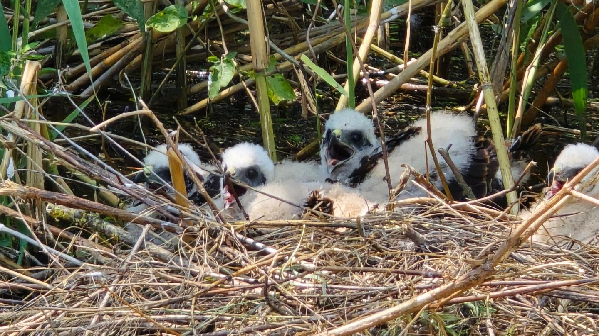

A vízállás függvényében több útvonalat is bejárhatunk, ami szinte minden esetben működik (kivéve az extrém alacsony illetve extrém magas vízállást)
Baja-Dunafürdőről indulással Vén-Duna bejárása szigetének érintésével, az elérhető mellékágak bejárása és a Dunán való visszatérés a kiindulási pontra. Ez kb. 10 km körüli hossz kezdőknek is teljesen vállalható.
A másik fő útvonal a Rezéti-Duna, Érsekcsanádról indulva Baja-Dunafürdőre érkezéssel. Ez kb. 20 km-es túra.

A Szeremlei Sugovica is gyönyörű terület, nagyon gazdag élővilággal.
Túra hossza:
Kb. 4-5 óra
10 km körüli távval
Kezdők számára szintén ideális.
Nagyon ígéretes a Ferenc tápcsatorna is, ahol olyan madarakat is láthatunk amiket Gemencen nem.
Ezeken kívül megfelelő vízállás esetén túrázhatunk a Pörbölyi Titánhoz, ami Magyarország legnagyobb kerületű fája.